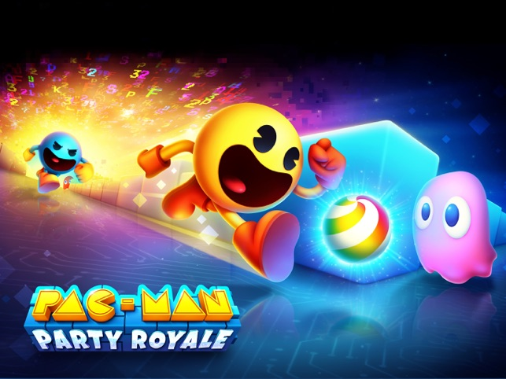
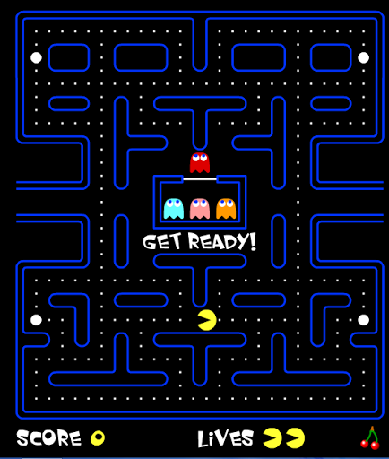

"-Waka waka waka waka waka waka waka waka!" - Pac-Man.
"-Waka Waka!" - Shakira conversando com Pac-Man
Divertir o jogador correndo por um labirinto fugindo de fantasmas comendo bolinhas e frutas que geram pontos.

Pacman: o come come amarelinho.
Fantasmas: caçam o pacman.
Bolinhas menores, bolinhas maiores e frutas: dão pontos e vantagens ao jogador.

Há exatos 35 anos, chegava aos fliperamas, no Japão, aquilo que viria a ser considerado um dos maiores clássicos dos videogames: Pac-Man.
Muito conhecido também no Brasil pelo apelido de Come-come, o revolucionário jogo de arcade foi lançado em 22 de maio de 1980 e apresentou uma série de inovações no mercado.